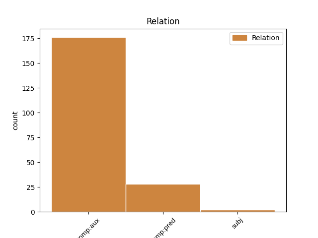

Distribution of features within this leaf

Agreement Rules sorted by frequency.
- When the dependent token is the complement for auxiliary(comp:aux) of the head token, and the head token is AUX and the dependent token is VERB.
1 Ära ära AUX V Mood=Ind|Polarity=Neg|Tense=Pres|VerbForm=Fin|Voice=Act 0 _ _ _
2 aja ajama VERB V Connegative=Yes|Mood=Imp|Number=Sing|Person=2|Tense=Pres|VerbForm=Fin|Voice=Act 1 comp:aux _ _
3 udu _ _ _ _ 0 _ _ _
1 Tee _ _ _ _ 0 _ _ _
2 selleni _ _ _ _ 0 _ _ _
3 on olema AUX V Mood=Ind|Number=Sing|Person=3|Tense=Pres|VerbForm=Fin|Voice=Act 0 _ _ _
4 igaühel _ _ _ _ 0 _ _ _
5 erinev erinev ADJ A Case=Nom|Degree=Pos|Number=Sing|Tense=Pres|VerbForm=Part|Voice=Act 3 comp:pred _ SpaceAfter=No
6 . _ _ _ _ 0 _ _ _
1 Ni _ _ _ _ 0 _ _ _
2 paljud _ _ _ _ 0 _ _ _
3 nimesed _ _ _ _ 0 _ _ _
4 on _ _ _ _ 0 _ _ _
5 oma _ _ _ _ 0 _ _ _
6 mures _ _ _ _ 0 _ _ _
7 üksi _ _ _ _ 0 _ _ _
8 , _ _ _ _ 0 _ _ _
9 sest _ _ _ _ 0 _ _ _
10 neil _ _ _ _ 0 _ _ _
11 pole _ _ _ _ 0 _ _ _
12 kellegiga _ _ _ _ 0 _ _ _
13 rääkida _ _ _ _ 0 _ _ _
14 ja _ _ _ _ 0 _ _ _
15 inimesed _ _ _ _ 0 _ _ _
16 , _ _ _ _ 0 _ _ _
17 kes _ _ _ _ 0 _ _ _
18 ise _ _ _ _ 0 _ _ _
19 neid _ _ _ _ 0 _ _ _
20 hooge _ _ _ _ 0 _ _ _
21 ei _ _ _ _ 0 _ _ _
22 põe _ _ _ _ 0 _ _ _
23 ei _ _ _ _ 0 _ _ _
24 saa saama VERB V Connegative=Yes|Mood=Ind|Tense=Pres|VerbForm=Fin|Voice=Act 0 _ _ _
25 ka _ _ _ _ 0 _ _ _
26 hästi _ _ _ _ 0 _ _ _
27 aru _ _ _ _ 0 _ _ _
28 , _ _ _ _ 0 _ _ _
29 millest _ _ _ _ 0 _ _ _
30 nad _ _ _ _ 0 _ _ _
31 räägivad rääkima VERB V Mood=Ind|Number=Plur|Person=3|Tense=Pres|VerbForm=Fin|Voice=Act 24 comp:pred _ SpaceAfter=No
32 ! _ _ _ _ 0 _ _ _
1 Erisoov _ _ _ _ 0 _ _ _
2 oleks olema AUX V Mood=Cnd|Tense=Pres|VerbForm=Fin|Voice=Act 4 comp:aux _ _
3 et _ _ _ _ 0 _ _ _
4 saaks saama AUX V Mood=Cnd|Number=Sing|Tense=Pres|VerbForm=Fin|Voice=Act 0 _ _ _
5 tuulde _ _ _ _ 0 _ _ _
6 lennata _ _ _ _ 0 _ _ _
7 koos _ _ _ _ 0 _ _ _
8 kallis _ _ _ _ 0 _ _ _
9 abikaasaga _ _ _ _ 0 _ _ _
10 ... _ _ _ _ 0 _ _ _
Disagree Examples:
1 Elektrienergia _ _ _ _ 0 _ _ _
2 hulk _ _ _ _ 0 _ _ _
3 , _ _ _ _ 0 _ _ _
4 mida _ _ _ _ 0 _ _ _
5 Dell _ _ _ _ 0 _ _ _
6 saab _ _ _ _ 0 _ _ _
7 rohelise _ _ _ _ 0 _ _ _
8 energia _ _ _ _ 0 _ _ _
9 ( _ _ _ _ 0 _ _ _
10 näiteks _ _ _ _ 0 _ _ _
11 tuule- _ _ _ _ 0 _ _ _
12 ja _ _ _ _ 0 _ _ _
13 päikeseenergia _ _ _ _ 0 _ _ _
14 ) _ _ _ _ 0 _ _ _
15 vahendajatelt _ _ _ _ 0 _ _ _
16 , _ _ _ _ 0 _ _ _
17 on olema AUX V Mood=Ind|Number=Sing|Person=3|Tense=Pres|VerbForm=Fin|Voice=Act 0 _ _ _
18 2004. _ _ _ _ 0 _ _ _
19 aastast _ _ _ _ 0 _ _ _
20 alates _ _ _ _ 0 _ _ _
21 kasvanud kasvama VERB V Tense=Past|VerbForm=Part|Voice=Act 17 comp:aux _ _
22 enam _ _ _ _ 0 _ _ _
23 kui _ _ _ _ 0 _ _ _
24 9-kordseks _ _ _ _ 0 _ _ _
25 . _ _ _ _ 0 _ _ _
1 Delli _ _ _ _ 0 _ _ _
2 hinnngul _ _ _ _ 0 _ _ _
3 on olema AUX V Mood=Ind|Number=Sing|Person=3|Tense=Pres|VerbForm=Fin|Voice=Act 0 _ _ _
4 säästupoliitika _ _ _ _ 0 _ _ _
5 mõjul _ _ _ _ 0 _ _ _
6 atmosfääri _ _ _ _ 0 _ _ _
7 jäänud jääma VERB V Tense=Past|VerbForm=Part|Voice=Act 3 comp:aux _ _
8 paiskamata _ _ _ _ 0 _ _ _
9 20000 _ _ _ _ 0 _ _ _
10 tonni _ _ _ _ 0 _ _ _
11 CO2 _ _ _ _ 0 _ _ _
12 . _ _ _ _ 0 _ _ _
1 Dell _ _ _ _ 0 _ _ _
2 ei _ _ _ _ 0 _ _ _
3 ole _ _ _ _ 0 _ _ _
4 ainus _ _ _ _ 0 _ _ _
5 firma _ _ _ _ 0 _ _ _
6 , _ _ _ _ 0 _ _ _
7 mis _ _ _ _ 0 _ _ _
8 on olema AUX V Mood=Ind|Number=Sing|Person=3|Tense=Pres|VerbForm=Fin|Voice=Act 0 _ _ _
9 panustanud panustama VERB V Tense=Past|VerbForm=Part|Voice=Act 8 comp:aux _ _
10 rohelisse _ _ _ _ 0 _ _ _
11 algatustesse _ _ _ _ 0 _ _ _
12 . _ _ _ _ 0 _ _ _
1 Järjest _ _ _ _ 0 _ _ _
2 enam _ _ _ _ 0 _ _ _
3 ettevõtteid _ _ _ _ 0 _ _ _
4 üle _ _ _ _ 0 _ _ _
5 maailma _ _ _ _ 0 _ _ _
6 on olema AUX V Mood=Ind|Number=Sing|Person=3|Tense=Pres|VerbForm=Fin|Voice=Act 0 _ _ _
7 otsustanud otsustama VERB V Tense=Past|VerbForm=Part|Voice=Act 6 comp:aux _ _
8 muuta _ _ _ _ 0 _ _ _
9 oma _ _ _ _ 0 _ _ _
10 energia _ _ _ _ 0 _ _ _
11 tarbimise _ _ _ _ 0 _ _ _
12 tõhusamaks _ _ _ _ 0 _ _ _
13 . _ _ _ _ 0 _ _ _
1 Tallinnas _ _ _ _ 0 _ _ _
2 on _ _ _ _ 0 _ _ _
3 see _ _ _ _ 0 _ _ _
4 probleem _ _ _ _ 0 _ _ _
5 , _ _ _ _ 0 _ _ _
6 et _ _ _ _ 0 _ _ _
7 korista _ _ _ _ 0 _ _ _
8 või _ _ _ _ 0 _ _ _
9 ära _ _ _ _ 0 _ _ _
10 korista _ _ _ _ 0 _ _ _
11 oma _ _ _ _ 0 _ _ _
12 kortermaja _ _ _ _ 0 _ _ _
13 krundiga _ _ _ _ 0 _ _ _
14 piirnevat _ _ _ _ 0 _ _ _
15 " _ _ _ _ 0 _ _ _
16 eikellegimaad _ _ _ _ 0 _ _ _
17 " _ _ _ _ 0 _ _ _
18 , _ _ _ _ 0 _ _ _
19 - _ _ _ _ 0 _ _ _
20 päeva _ _ _ _ 0 _ _ _
21 või _ _ _ _ 0 _ _ _
22 paari _ _ _ _ 0 _ _ _
23 pärast _ _ _ _ 0 _ _ _
24 on olema AUX V Mood=Ind|Number=Plur|Person=3|Tense=Pres|VerbForm=Fin|Voice=Act 0 _ _ _
25 prügikastivennad _ _ _ _ 0 _ _ _
26 selle _ _ _ _ 0 _ _ _
27 ära _ _ _ _ 0 _ _ _
28 lagastanud lagastama VERB V Tense=Past|VerbForm=Part|Voice=Act 24 comp:aux _ _
29 ja _ _ _ _ 0 _ _ _
30 mingel _ _ _ _ 0 _ _ _
31 hetkel _ _ _ _ 0 _ _ _
32 ei _ _ _ _ 0 _ _ _
33 jõua _ _ _ _ 0 _ _ _
34 ega _ _ _ _ 0 _ _ _
35 taha _ _ _ _ 0 _ _ _
36 enam _ _ _ _ 0 _ _ _
37 nende _ _ _ _ 0 _ _ _
38 järelt _ _ _ _ 0 _ _ _
39 koristada _ _ _ _ 0 _ _ _
40 . _ _ _ _ 0 _ _ _